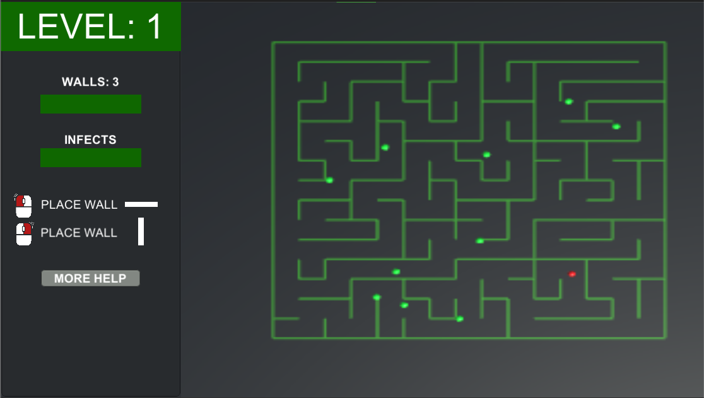

Über die Projekte
Mit 14 Jahren habe ich begonnen Computerspiele zu entwickeln. Dies war mein Einstieg in die Softwareentwicklung. In den darauf folgenden Jahren bis zum Beginn meines Studiums sammelte ich hobbymäßig Erfahrung in diesem Bereich. Eine Auswahl abgeschlossenener Projekte sehen Sie hier.
Maze – Gamejam Projekt
Dieses Spiel entstand innerhalb von 48 Stunden im Rahmen eines Gamejams zum Thema "Isolation".
- Labyrinth in einem Grid-System
- Infizierte NPCs suchen gesunde NPCs um sie zu infizieren (Path Finding)
- Ziel: Mauern auf Grid platzieren, sodass infizierte NPCs isoliert werden
- Levelsystem
Auf itch.io veröffentlicht
*im Browser spielbar

2037 – Gamejam Projekt
Dieses Spiel entstand innerhalb von 48 Stunden im Rahmen eines Gamejams zum Thema "Out of Controll".
- In der Stadt ist eine Zombieapokalypse ausgebrochen
- Spieler soll eine Drohne Steuern, welche die Zombies ausschaltet
- Drohne ist außerkontrolle und visiert zufällig neue Ziele an
- Entscheide ob Target ausgeschaltet werden soll
- Ziel: Alle Zombies ausschalten, bevor es keine Menschen mehr gibt
Auf itch.io veröffentlicht
*Download erforderlich (Windows)
Monopoly Multiplayer
Ein Multiplayer Monopoly Klon für Android Geräte.
- Regeln aus dem offiziellen Monopoly Spiel
- Multiplayer mit Lobbies für bis zu 20 Spieler
- Umsetzung eventbasiert mit Photon Engine Framework
*aus rechtlichen Gründen nicht veröffentlicht